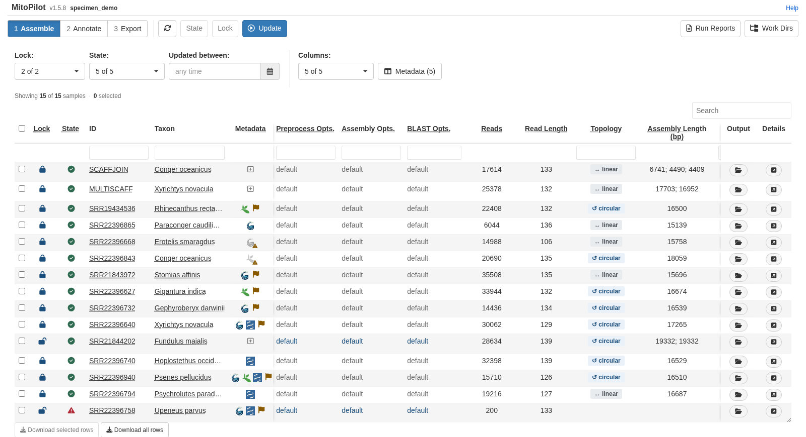
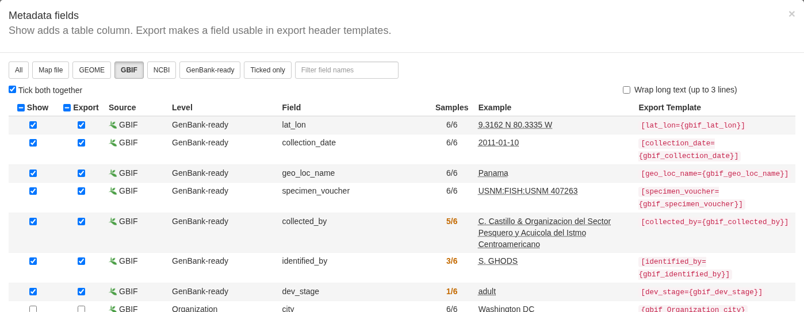
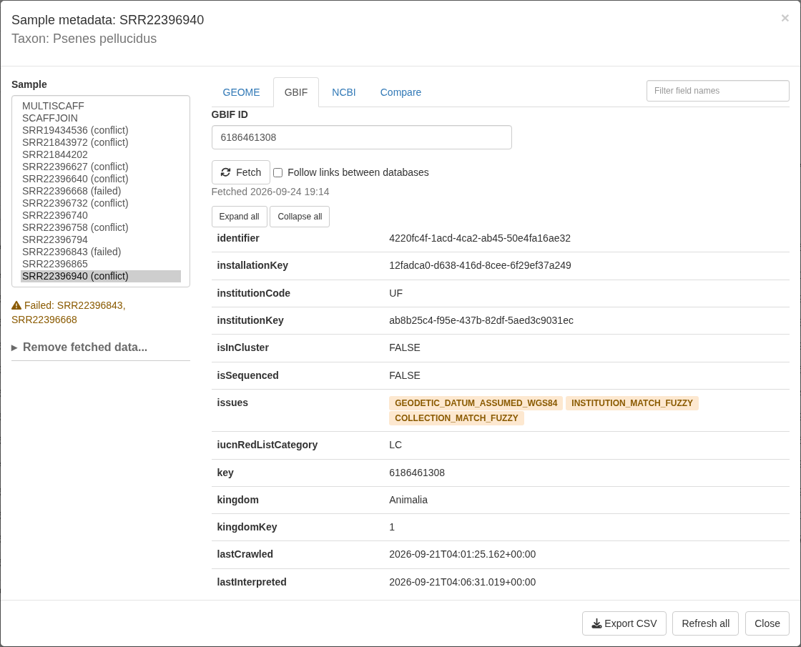
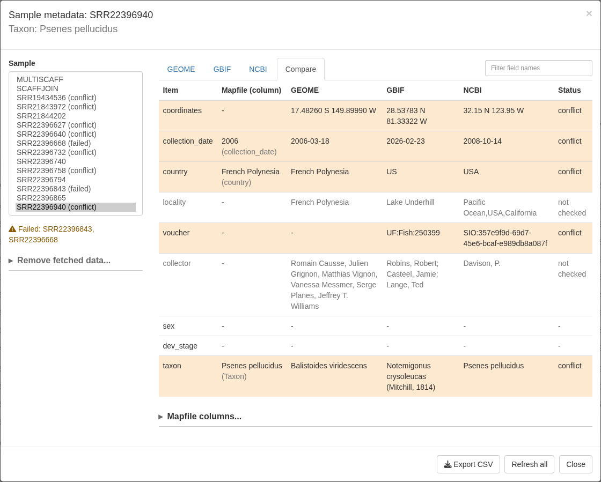
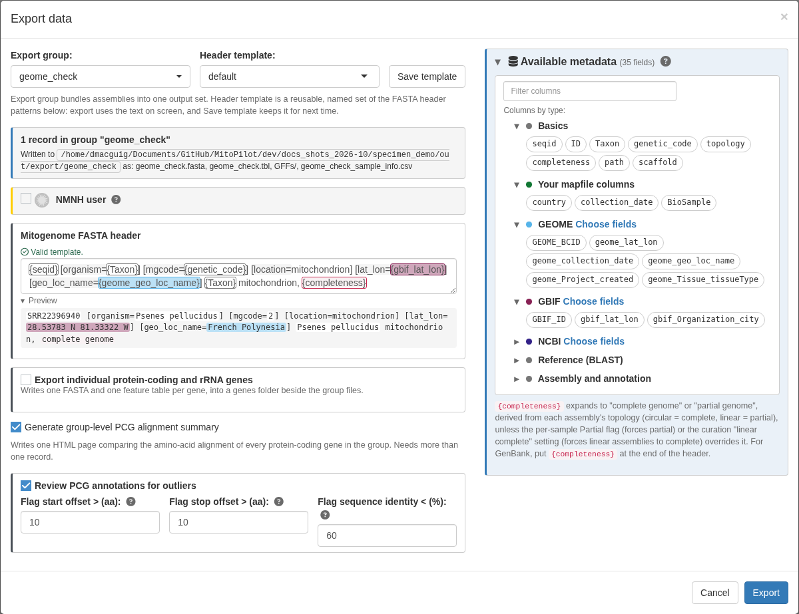
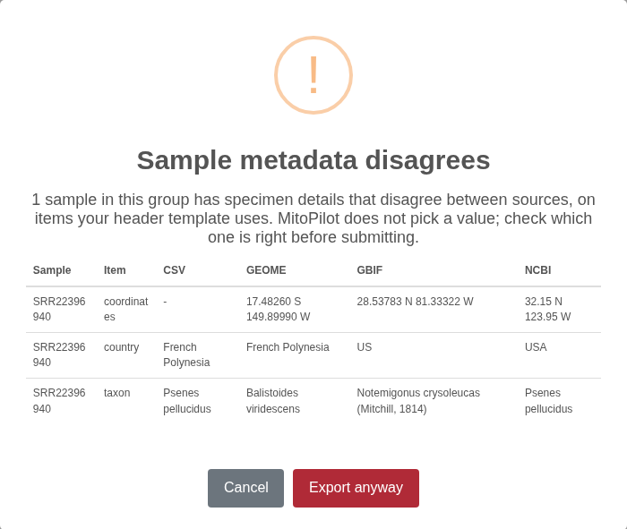

Sample metadata: GEOME, GBIF, and NCBI
Source:vignettes/Specimen-Metadata.Rmd
Specimen-Metadata.RmdMitoPilot can optionally link each sample to its records in three public databases, show them in the app, flag where they disagree, and use their values in your GenBank FASTA headers.
| Database | What it holds | Identifier you supply |
|---|---|---|
| GEOME | Specimen, tissue, and collecting-event records from field projects |
BCID, such as
ark:/21547/CXu2MBIO1000.1
|
| GBIF | Museum and collection specimen records (“occurrences”) |
gbifID, such as 6186461308, or
Smithsonian EZID
|
| NCBI BioSample | The biological material behind GenBank and SRA data |
BioSample (SAMN29555051) or
SRA accession (SRR21844202) |
MitoPilot never merges values or picks one source over another. Each source keeps its own fields, and you decide which ones go into your FASTA headers. Records are not live, so if the remote database changes, you need to rerun the fetch in MitoPilot.
Public records only. MitoPilot reads public GEOME records, GBIF occurrences, and NCBI BioSamples. Private GEOME or NCBI projects are not supported.
Related pages:
- Linking records across databases: fill in the other databases from one ID.
- NMNH voucher submissions: NMNH metadata requirements for GenBank records.
- Metadata field reference: every export field, the column names MitoPilot recognizes, and fetch messages.
Quick start
- Add a column of IDs to your mapping file.
- Name it in
new_project()(for examplemapping_gbif = "Occurrence"). MitoPilot fetches the records during setup. - In the app, check the Metadata column: one logo per fetched source.
- Click the Metadata button above a table and tick
Export on the fields you want, such as
gbif_lat_lonandgbif_collection_date. - In Export Data, click those fields to add them to the FASTA header template, then export.
Common tasks
| Task | In R | In the app |
|---|---|---|
| Link IDs at setup | new_project(mapping_geome =, mapping_gbif =, mapping_ncbi =) |
NA |
| Add or change IDs |
update_sample_metadata(), or
fetch_*(ids =, gbifs = / bcids = / ncbi_ids =)
|
Click an icon in Metadata column to open the metadata selector, edit the ID, Fetch |
| Refresh records |
fetch_geome(), fetch_gbif(),
fetch_ncbi()
|
Refresh all in metadata selector |
| Fill in other databases | link_sources = TRUE |
Follow links between databases in metadata selector |
| Pick which mapping-file columns are compared | set_metadata_columns() |
Mapfile columns… on the Compare tab |
| Use fields in FASTA headers | NA | Metadata button, then toggle Export Data |
| Remove fetched data | remove_metadata() |
Remove fetched data… in metadata selector |
Finding the identifiers
-
GEOME BCID. Open a record on geome-db.org and copy its identifier,
which starts with
ark:/. Use the most specific record that matches your sequenced material, usually the tissue: MitoPilot also fetches the sample, collecting event, expedition, and project above it. -
gbifID. Open the occurrence on gbif.org and copy the number at the end
of its address
(
https://www.gbif.org/occurrence/6186461308). -
Smithsonian EZID. NMNH specimens can use their
EZID, a persistent identifier starting with
ark:/65665/, in place of a gbifID. MitoPilot finds the matching GBIF occurrence, so the specimen must be on GBIF. EZIDs are more stable than gbifIDs. Links fromn2t.netorcollections.nmnh.si.eduwork, with or without dashes. - BioSample or SRA accession. Copy the BioSample accession from NCBI BioSample, or use the NCBI SRA accession of your reads . For an SRA accession, MitoPilot finds its associated BioSample and also stores the run, experiment, study, platform, and library.
gbifIDs are not persistent When a publisher changes how it identifies a specimen, GBIF may give it a new gbifID. If an ID stops working, MitoPilot keeps the data it fetched before and marks the fetch as failed. Look the specimen up again on gbif.org and paste the new ID.
Adding identifiers
At project setup
Add a column for any or all databases to your mapping file, and name
the columns with mapping_geome, mapping_gbif,
and mapping_ncbi:
ID,Taxon,R1,R2,Tissue_BCID,Occurrence
FISH01,Psenes pellucidus,FISH01_R1.fastq.gz,FISH01_R2.fastq.gz,ark:/21547/CXu2MBIO1000.1,
FISH02,Notemigonus crysoleucas,FISH02_R1.fastq.gz,FISH02_R2.fastq.gz,,6186461308
FISH03,Conger oceanicus,FISH03_R1.fastq.gz,FISH03_R2.fastq.gz,,
new_project(path = "my_project", mapping_fn = "mapping.csv",
mapping_geome = "Tissue_BCID", mapping_gbif = "Occurrence",
data_path = "reads/")- The columns are stored as
GEOME_BCID,GBIF_ID, andBioSample. - Blank cells are fine: those samples have no link.
- Fetching needs internet access on the machine running R. Offline,
pass
fetch_geome = FALSE,fetch_gbif = FALSE, andfetch_ncbi = FALSE, and fetch later. Pipeline jobs on compute nodes never contact these databases. -
new_project_userAsmb()takes the same arguments.
Later
add_samples() and update_sample_metadata()
take the same mapping_*, fetch_*, and
link_sources arguments. With
update_sample_metadata(), samples whose ID changed or was
added are fetched again, and a blank cell removes that sample’s link and
data for that source only.
To fetch again without touching the mapping file:
fetch_gbif("my_project") # refresh every gbifID
fetch_gbif("my_project", ids = "FISH02") # refresh one sample
fetch_gbif("my_project", ids = c("FISH01", "FISH02"),
gbifs = c("2336663130", "6186461308")) # set new IDs, then fetch
fetch_ncbi("my_project", ids = "FISH03", ncbi_ids = "SAMN29555051") # same idea, but for NCBI
fetch_geome("my_project", ids = "FISH04", bcids = "ark:/21547/CXu2MBIO1000.1") # same idea, but for GEOMEWhen some fetches fail, the rest still finish and one warning lists each failed sample with the reason. A failed refresh keeps the data fetched before; changing to a different ID clears the old record right away. The fetch messages table explains each reason.
NCBI allows three requests per second, or ten with a free NCBI API key.
Metadata fetches use the same key as the rest of the project: the
ncbi_api_key you set in new_project() (see Running Your Own Project), or else the
NCBI_API_KEY environment variable.
Viewing records in the app
The Metadata column
The Assemble, Annotate, and Export tables have a Metadata column after Taxon, with one logo per source the sample has an ID for:
| Icon | Meaning |
|---|---|
| “+” | No IDs. Click it to add one. |
| GEOME “G”, GBIF leaf, NCBI helix | The record was fetched. |
| Faded logo | The ID is set but not fetched yet. |
| Faded logo with a warning triangle | The fetch failed. Hover to see why. |
| Orange flag | The sources disagree on at least one item (see Comparing sources). |

Showing metadata in the tables
The Metadata button next to each table’s
Columns picker opens the Metadata
fields window. It lists every field with a value for at least
one sample, with an example value and a sample count (for example
12/20). Each row has two ticks:
- Show adds the field as a column in all three MitoPilot tables.
- Export makes the field usable in export FASTA header templates and writes it to the sample summary CSV.
Mapping-file columns are always available at export. Click Save to keep your choices in the project.

The sample metadata viewer
Click a sample’s Metadata icon to open the viewer. It has a tab for each database and a Compare tab. Here you can:
- edit an ID and click Fetch (clear the box to remove the link)
- click Refresh all to fetch every sample again
- filter fields by name, copy any value, or Export CSV to save all of a sample’s metadata
The sample list on the left marks samples that failed to fetch or have a conflict between the different metadata sources.

Comparing sources
The Compare tab puts the values from your mapping file, GEOME, GBIF, and NCBI side by side for coordinates, collection date, country, locality, voucher, collector, sex, life stage, and taxon.
| Status | Meaning |
|---|---|
| agree | Every source with a value agrees. |
| agree (rounding) | Coordinates agree within 0.01 degree. |
| conflict | A real disagreement. |
| not checked | Free text, or a value that could not be read. |
| single | Only one source has a value. |
Blanks never conflict, and placeholders such as missing
or not collected count as blank. MitoPilot finds your
mapping-file columns by common
names. If yours differ, pick them under Mapfile
columns… or in R:
set_metadata_columns("my_project", country = "Country_Name",
coordinates = c("Lat_DD", "Long_DD"))
set_metadata_columns("my_project", country = NA) # back to automatic
set_metadata_columns("my_project", sex = "") # do not compare sex
Using metadata fields at export
For a fetched value to be included in the FASTA header, you must tick
Export in the metadata browser (see Showing metadata in the
tables). Each source offers GenBank-ready fields
that are already formatted as GenBank FASTA source modifiers: the
[name=value] tags in a header such as
[lat_lon=17.48 S 149.90 W]:
In the Export Data window, the Available
metadata panel lists every field you can use. Click one to
insert it into the FASTA header box. A GenBank-ready field inserts the
whole modifier, such as [lat_lon={gbif_lat_lon}].
Choose fields next to a source opens the Metadata
fields window so you can quikcly enable more metadata fields for
export.

-
Take a record’s values from one source where you
can. Mixing sources can combine coordinates and dates from
different events. If you cite a BioSample with
[BioSample=], GenBank expects the header values to agree with it. - Empty values are left out. A modifier with no value for a sample is dropped from that sample’s header instead of written empty. The check under each header box names fields missing for some samples, and warns when the same modifier appears twice.
-
Check GBIF values. GBIF’s
countryis its own English name (United States of America, where GenBank expectsUSA), and GBIF may have adjusted or generalized coordinates. See the GBIF notes.
When you click Export, MitoPilot checks the items your templates use. If any sample in the export group has a metadata conflict, a warning lists each sample, item, and value. Click Export anyway or Cancel.

Removing fetched data
Remove fetched data… under the sample list in the
viewer, or remove_metadata(), deletes fetched records for
one sample or all:
remove_metadata("my_project") # everything fetched
remove_metadata("my_project", sources = "GBIF") # one source
remove_metadata("my_project", sources = c("GEOME", "GBIF"), ids = "FISH02")This removes the stored records, their fetch status, and IDs that
linking filled in. Your mapping-file columns, the IDs you supplied, and
your field ticks are kept, so Refresh all or
fetch_*() brings the data back.